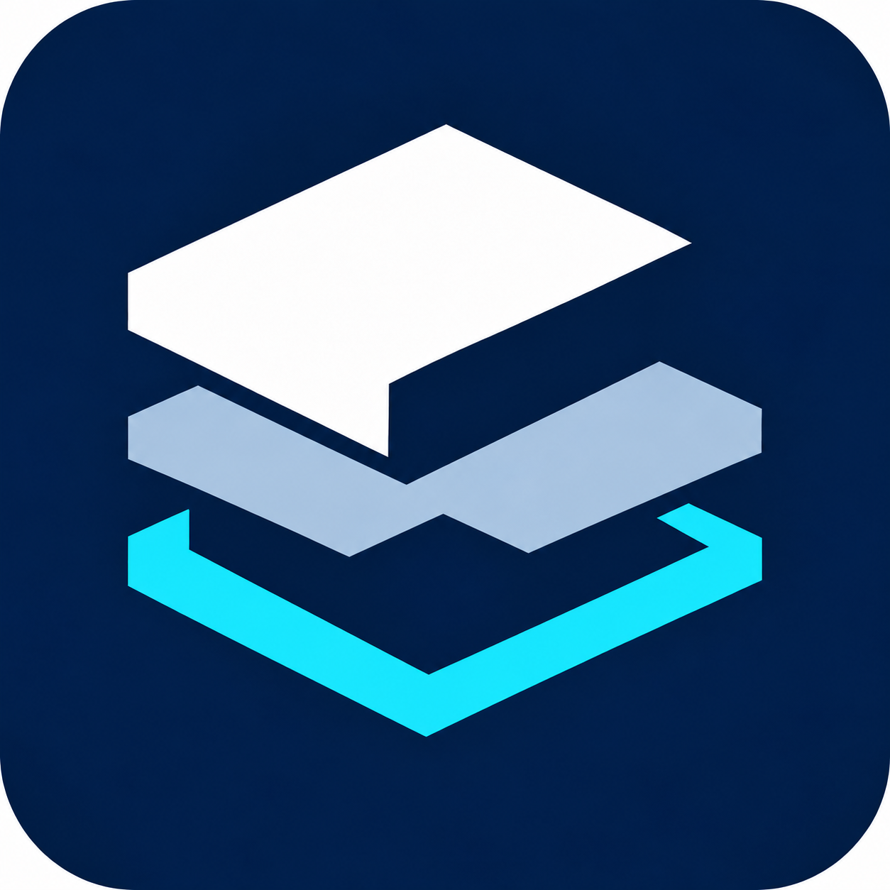

설치 도우미 DMG 권장
이미지 안의 VERA-X 설치를 여세요.
도우미를 받은 뒤 약 9.5GB의 설치 자료를 자동으로 받습니다.
검사에서 발견한 내용을 놓치지 않도록,
확인과 기록의 흐름을 이어갑니다.
설치 도우미를 받으면 필요한 자료를 자동으로 준비합니다.

Mac 앱 자동 설치 도우미
최종 설치 도우미를 확인하고 있습니다.
준비가 끝나면 이곳에서 내려받을 수 있습니다.
이미지 안의 VERA-X 설치를 여세요.
도우미를 받은 뒤 약 9.5GB의 설치 자료를 자동으로 받습니다.
압축을 푼 뒤 같은 VERA-X 설치를 여세요.
도우미를 받은 뒤 약 9.5GB의 설치 자료를 자동으로 받습니다.
공개 설치본에는 시연 예제가 포함되지 않습니다. 직접 준비한 이미지를 열어 검사하세요.
현재 검증용 배포본입니다. Apple 개발자 서명(Developer ID)과 공증은 완료되지 않았습니다.
설치 자료를 받을 때 인터넷 연결이 필요합니다. 필요한 저장 공간은 다운로드 전에 도우미에서 확인합니다.
현재 안내는 Apple Silicon Mac용입니다. Intel Mac과 Windows용 설치 파일은 제공하지 않습니다.
이미 사용 중이라면 기존 검사 기록을 먼저 백업하고 앱을 종료하세요.
DMG를 열거나 ZIP의 압축을 풀고 VERA-X 설치를 실행하세요. 두 파일에는 같은 설치 도우미가 들어 있습니다.
Mac의 사용 환경과 여유 공간을 확인하고 다운로드 시작을 누르세요. 도우미가 필요한 자료를 자동으로 받고 확인합니다.
자료 준비가 끝나면 설치 시작을 누르세요. 열리는 macOS 설치 화면의 안내에 따라 진행합니다.
응용 프로그램에서 VERA-X를 여세요. 시작 준비가 끝나면 지원 제품군과 입력 조건을 확인하고, 직접 준비한 이미지를 등록해 검사 시작을 누르세요.
Apple Silicon 칩이 탑재된 Mac과 macOS 26.2 이상을 대상으로 합니다. 설치 시 기기와 여유 공간을 확인합니다. Intel Mac용 설치 파일은 제공하지 않습니다.
앱 안의 백업 기능으로 필요한 기록을 먼저 보관하세요. VERA-X를 종료한 뒤 설치 도우미로 새 버전을 설치하고, 완료 후 앱을 다시 여세요.
현재 배포본은 Apple 개발자 서명과 공증을 완료하지 않았습니다. 이 페이지에서 받은 파일인지 확인하고, 출처와 파일을 신뢰하는 경우에만 시스템 설정의 개인정보 보호 및 보안 → 그래도 열기를 검토하세요. 자세한 절차는 Apple 공식 안내에서 확인할 수 있습니다. 시스템 보안 기능을 끄지 마세요.
검사 결과와 설명은 검토를 돕는 참고 자료입니다. 실제 제품의 최종 판단에는 해당 현장의 기준과 담당자의 확인이 필요합니다.